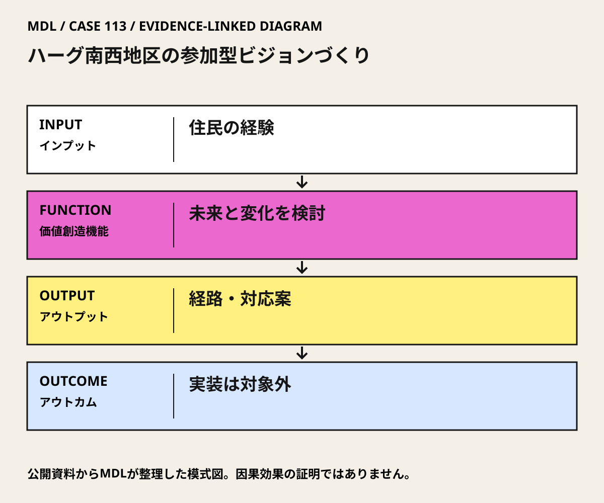

I / INPUT
何を持ち込んでいるか。
活動の出発点となる資源と課題を分けて整理します。「自社」は、その場・制度を運営する組織を指します。
- 自社・運営組織
Jittrapiromは構想、方法、プロジェクト管理、執筆を主導。Bekius・Führerらと共同研究。
公開資料で確認出典 1- 行政・公共機関
ハーグ市交通計画担当と研究者が目的・プロセスを共同で検討し、市担当者も参加した。
公開資料で確認出典 1- スタートアップ
この個別研究への特定スタートアップ参加は未確認。
公開資料では未確認- アカデミア
Radboud大学とDelft工科大学所属の著者が、参加型ビジョンの方法を構成・分析した。
公開資料で確認出典 1- 市民・利用者・現場
街頭調査41人と、住民・特別な移動ニーズ等の視点を含む2回のワークショップ。各回8人で一部参加者は異なる。
公開資料で確認出典 1
有形資産
場所・設備・実証環境南西地区の交通網と生活環境、現地会場、調査・ワークショップの記録。新しい交通施設は建設していない。
関係資本
信頼・ネットワーク・導入先市と研究者の事前調整、分野の違う参加者の対話、報告案へのコメントと庁内共有。
金融資本
活動資金・投資・費用負担NWO助成403.19.215で研究を支援。提案の実装予算が確保された証拠ではない。
知的資本・データ
技術・知財・知識・標準Appreciative InquiryとDynamic Adaptive Planningを組み合わせ、地域の強み、将来像、経路、変化への対応を結ぶ。
課題・ニーズ
誰の何を変えるのか現在の交通に満足があっても、住宅増加など不確実な将来に向けて何を守り変えるか、関係者の見方が一致しない。
II / VALUE CREATION FUNCTIONS
資源を、どう価値へ変えるか。
以下は既存の8ステップへの編集上の対応づけです。各取り組みの公式な工程名や、全工程を自前で担うことを意味しません。
III / OUTPUT
直接、何が生まれたか。
試作品、データ、契約、標準、育成した人材など、活動から直接生まれたもの。
移動の将来像、実現経路、将来変化への対応案を整理した報告。2022年5月に確定し、6月9日に市の内部共有会を開催。
公開資料で確認出典 1
IV / OUTCOME
その結果、何が変わったか。
実際の利用、行動、業務、事業、地域の変化。報告された変化と、当該活動に帰属できる効果は区別します。
PROJECT IN FOCUS / 具体的な事例
ハーグ南西地区の参加型ビジョンづくり
確認できた段階：参加型交通計画の方法研究 調査確認日 2026-10-06
誰の課題を、どう扱ったか
生まれたもの
移動の将来像、実現経路、将来変化への対応案を整理した報告。2022年5月に確定し、6月9日に市の内部共有会を開催。
確認できた変化
研究結果が参加者と市の計画担当へ届いたことを確認。正式な政策採択や交通改善の実績とは区別する。
評価の限界：対象はThe Hague南西地区の2023年原著が扱う個別研究。On the Move全体の成果や関係機関の実装を本人へ帰属させない。小標本・参加制約があり、全住民の合意ではない。施策間の定量的トレードオフや実装判断は未実施。
DESIGN BACKWARDS FROM IMPLEMENTATION
社会実装から逆算して、
何を先に整えているか。
実証の先にある導入・運用・継続から、この事例の設計を読み解きます。原典で確認できる仕組みと、MDLの設計解釈・他地域へ応用するための提案を区別して読んでください。「提案」「未実施」と記す内容は、当地で実施済みの工夫ではありません。仕組みの存在と、全案件で成果が出たことも別に扱います。
MORE DETAIL / 運営・根拠・応用
運営の全体像と、学びを深める資料。
費用負担、公表値、応用条件、写真・動画、原典を続けて確認できます。
01どう動かしているのか。
41人への街頭調査を議論の入口とし、住民・交通・住宅・市側等の参加者が地域の良さ、将来像、実現経路を整理する。将来の出来事が経路へ与える影響と対応案を検討し、報告書を市と参加者へ返す。
意思決定と本人の関与：研究で確認できる判断は、将来像と複数の経路・対応案を整理し市へ報告したことまで。施策の優先順位や資源配分、採用・実装の最終決定は対象外で、市等の権限主体に残る。 2023年原著のContributionsはJittrapiromが研究・方法の構想、プロジェクト管理、執筆主導を担当したと明記。On the Move全体の所有者や市の計画決定者とはしない。
- 暮らしの経験を集める
- 地域の良さから未来を描く
- 前提変化と対応を検討する
- 結果を市と参加者へ返す
02誰が負担し、誰が担うか。
原著の謝辞にDutch Research Council（NWO）助成403.19.215を記載。個別ワークショップの費用と市側の負担額は未確認。
制度やプログラムの財源と、各参加企業・地域に発生する費用は同じではありません。公開範囲を超える案件別予算・契約条件は未確認です。
03確認できたこと。
移動の将来像、実現経路、将来変化への対応案を整理した報告。2022年5月に確定し、6月9日に市の内部共有会を開催。
読み取れる範囲：対象はThe Hague南西地区の2023年原著が扱う個別研究。On the Move全体の成果や関係機関の実装を本人へ帰属させない。小標本・参加制約があり、全住民の合意ではない。施策間の定量的トレードオフや実装判断は未実施。
原典で確かめる ↗ 出典の説明 ↓04日本で活かすなら。
日本でも未来像の合意で終わらせず、誰が何を引き受け、どの観測で見直すかまで検討する。ただし本研究で実装の成功は未確認なので、方法の参考と成果の保証を区別する。
05そのまま真似できないこと。
対象はThe Hague南西地区の2023年原著が扱う個別研究。On the Move全体の成果や関係機関の実装を本人へ帰属させない。小標本・参加制約があり、全住民の合意ではない。施策間の定量的トレードオフや実装判断は未実施。
06次に、何を確かめるか。
提案・未実施：自治体交通担当を責任者に、住民・運行者と90日以内に1つの経路案の引受主体・予算・監視指標を確認。未解決の移動、協力の履行、運営負担、需要減・事業者退出時の代替を測り、現状維持、案内連携、サービス調整、拠点変更を比較。Continue＝目標・権限・負担者が一致、Pivot＝前提が変われば経路を変更、Stop＝必要な移動や公正な参加を確保できない。
07写真・図と原資料で確かめる。
現場の写真を見る ↑
DIAGRAM: モビリティデザインラボ · 根拠資料 ↗
図の説明
公開資料に基づく模式図。住民の経験 → 未来と変化を検討 → 経路・対応案 → 実装は対象外。実景や地理的配置を示さない。
2026-10-06 · MDL作成の説明図。第三者の写真・図面の複製ではありません。
冒頭写真：Den Haag ZuidwestのDrentheplantsoen周辺
原資料で、当時の調査・実践を読む ↗08原典を読む。
Visioning future transport systems with an integrated robust and generative framework ↗
The Hague南西地区の41人調査、2回のWS、研究者の役割、実装対象外、NWO助成
英語・査読原論文。全文HTML・PDF・オープンアクセス。
On the Move: Transition towards Sustainable Mobility ↗
On the Move全体の期間・研究メンバー・NWO支援。全体の責任者と個別研究を区別
オランダ語・大学公式のプロジェクト概要。本文公開。原論文本文ではない。